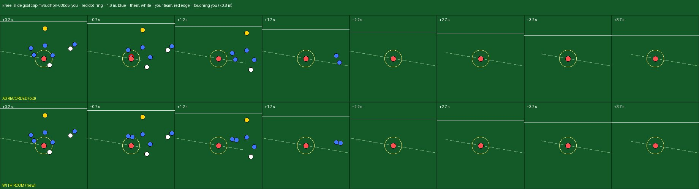
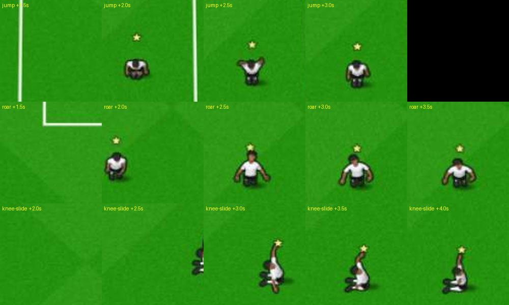
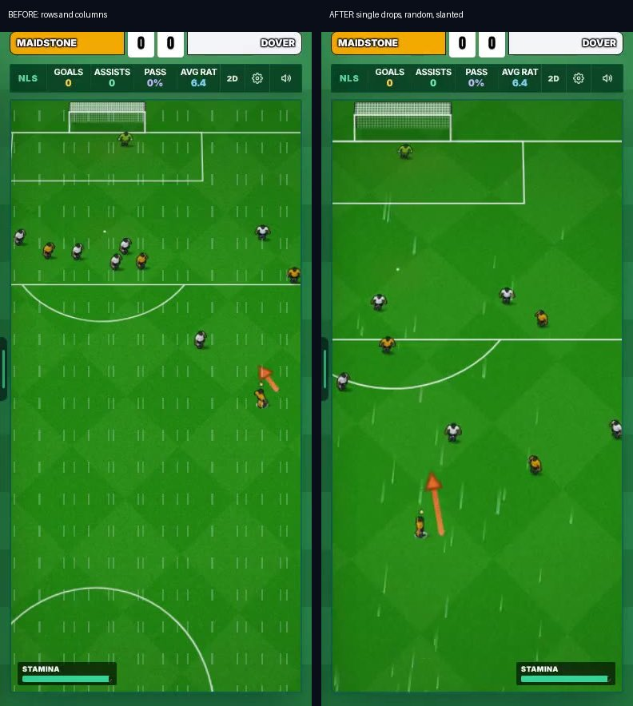
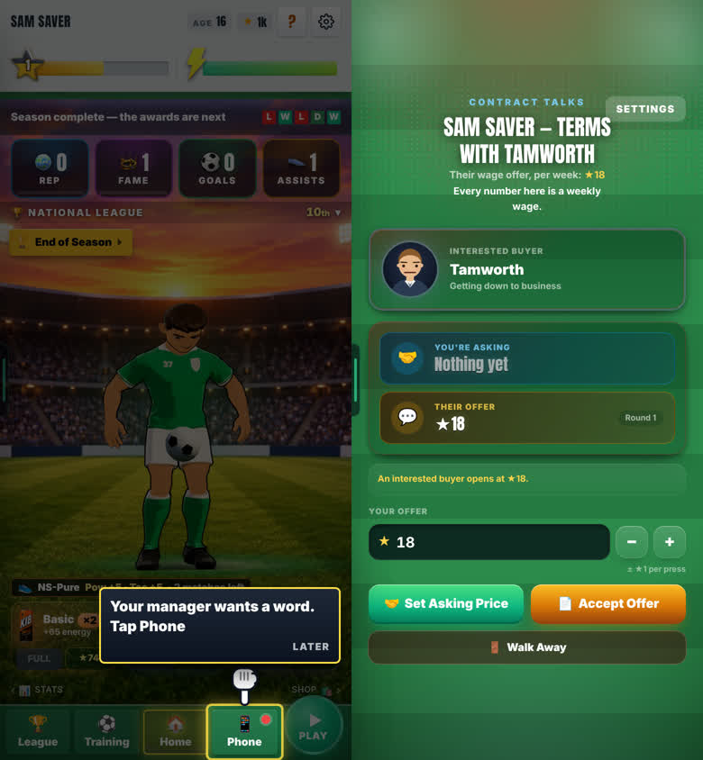
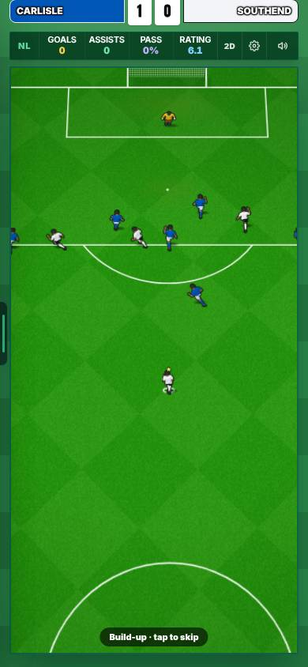

Celebrations, smooth feed and weather
On the live site since 26 Oct, switched off for everyone. Admins turn it on in Settings → Updates → “Leo’s 26 Oct update”, one switch per part.
Made by Leo · 25 Oct 2026, 12:40 UK · 7 chats overnight
Updated 26 Oct, 03:42 UKAll 7 parts are on the live site, switched off for everyone. The card is now “Leo’s 26 Oct update” (was the 24 Oct card). Weather is a new part.
CHECK THESE
Turn the card on first: Settings → Updates → “Leo’s 26 Oct update”. It changes only your phone.
About the clips. Real play only, filmed from a production build. 🔊 = the game’s own sound: tap the speaker on the video. Part 3’s goal clips use the new frame-by-frame recorder. The others are screen recordings, so the ball can still look a little jumpy. Sandbox with no database: players and badges are invented.
1 · FIXED: CELEBRATIONS, NOBODY ON TOP OF YOU
You score and run to the corner. Anyone near your path now steps aside before you reach him, live and in goal videos. The keeper stays on his spot.
Drawing, from above. Blue is you, red a defender, yellow the keeper. The faded red dot is where the defender used to stand: on your path.

More pictures (2)


2 · FIXED: SOCIAL FEED, SMOOTH ON A SLOW PHONE
The slow part was the phone drawing each post as it came near. The worst was a frosted-glass blur on the video button and the tab bar: with the fast feed on they are solid colours, and look nearly the same. Your goal’s post now always has its video.
Look forthe left side stops and jumps as it scrolls; the right side runs smoothly.
More clips (1)
Look fortap your goal’s post: it plays at once (about 0.1 s).
3 · ADDED: CLIPS THAT LOOK LIKE THE GAME
The ball looked jumpy in our clips because the test machine repeated about 1 frame in 6 while it recorded. Now the game moves one frame at a time while filming, so every frame is caught, with the sound on the same clock. No game code changed.
Drawing. Each box is one frame of a clip; the white dot is the ball. A repeated frame makes the ball stop, then jump.
Look forthe left clip hangs for a moment; the right one moves the ball every frame.
More clips (2)
Look forthe run to the corner and the knee slide, with no stops.
Look forthe run with arms out, with no stops.
4 · ADDED: WEATHER IN REAL MATCHES
Each career match gets rain, wind and the home club’s pitch, from the match date. The team sheet says it (“Rain · poor, wet pitch”, “Windy 12 m/s”) and the match draws it lightly, with a wind arrow. It has its own switch under yours: off = the game as before.
Look forthe team sheet says “Rain · poor, wet pitch”, then slanted drops over the match.
More clips and pictures (2)
Look for“Windy 12 m/s · poor pitch” on the team sheet, the wind arrow, a lofted strike saved, then a real goal.

5 · ADDED: REAL GOALS, READY FOR PLAYERS
All 8 paths were played on a phone slowed 4×: 35 levels, stars kept after a reload, no page errors. Two bugs fixed: a level got stuck on a “FULL TIME” card after 6 shots (now it restarts every 5 tries), and a miss showed three bright white stars (now grey outlines). A plan to put it in the game is written: your call, below.
Look forthe build-up, GOAL, then 100% and three stars.
More clips (1)
Look forafter the goal, the daily card says “🔥 1 day · Beaten today”.
6 · FIXED: END OF SEASON, SOLID
The awards night was silent unless you had played a match since you opened the app. In the season video the crowd was lost in the music, and sound and picture drifted apart.
The awards night now cheers at all 5 names. The season video’s crowd roar sits well over the music, with no clipping, and in step with the picture. The awards night does about 30% less work per frame for the same picture. The white screen did not come back in 10 full runs.
Look forthe crowd cheers as you win the Golden Boot and Player of the Season on stage.
More clips (1)
Look forseason video → Ballon d’Or → window → awards night → Golden Boot → next season, in one go.
7 · FIXED: BUG HUNT, 13 FOUND, 4 FIXED
2 full seasons with your switch on, 1 with it off (it plays as before), 10 refreshes (nothing lost), and back and Escape on every new screen. Fixed: Talks → Settings → Back threw you to Home; the signing scene said “THE MANAGER”; the goal card said “long_range”; Escape did not close the goal sheet. The 9 not fixed are under Known issues.

More pictures (2)


8 · CHANGED: BIG-MOMENT BANNER, NONE
The banner over the pitch is removed. The heartbeat, the crowd rise, the slow motion and the late commentary lines stay. It is part of the celebrations work (part 1).

YOUR CALLS
- Team-mates jog over when you celebrate?Now everyone else stands still for the 5 s. Team-mates could run to you and opponents walk away.
- A longer run for long-range goals?From far out, the 2 s run ends near the box, not the corner.
- Simpler posts for the slowest phones?At 6× slow there are still 0 to 6 hiccups. Smooth every time needs fewer effects on each post, which changes the look.
- Make the awards night louder?It is about 17 dB quieter than the season video.
- Keep weather in the game? (Leo and Harry)The match engine files are not changed. The match screen gets 1 small block that draws the weather; page.tsx gets 1 line.
- Put Real Goals in front of players?A “⚽ Real Goals” row on the title screen with your streak. Needs Harry’s yes on two things first, then about a day of work.
KNOWN ISSUES
Sound was measured, not heard. No real squads in the sandbox. The 3D celebration was not seen: 3D draws very slowly on the test machine, and 6 real shots in 18 minutes did not go in. Check it on a phone: score once with the 3D view on.
- Feed at 6× slow: 0 to 6 hiccups across 3 runs, so not smooth every time.
- Weather: team-mates’ guess of the ball’s path and the 90 minutes you don’t play ignore it. The wind bend is hard to see at the match camera.
- Real Goals: today’s daily starts with the shooter almost off the screen edge (match camera). Its test fails only on 3 sentences in Harry’s 0.101h notes that name the removed data source.
- Celebrations: the camera stops at the pitch edge near the touchline.
- The phone’s back button leaves the game from every screen.
- Harry: a refresh mid-match loses the match; 3D runs out of graphics after Ballon d’Or → signing → awards night; the Ballon d’Or night has the same silent-cheer gap.
- Mikey: the Star Pass pop-up can’t be closed; the opening wage in the talks changes between visits.
- Plus 4 small ones.
The numbers, if you want them
1 · Celebrations
- 14 real goal recordings. Before: 4 had someone within 0.8 m of you (closest 0.23 m), touching for up to 0.2 s. After: closest 1.60 m, touching 0 s.
- 15 goals checked by eye: all six moves right, each to the nearer corner; tap to skip clears in 0.02–0.09 s; the keeper stays on his spot.
2 · Feed
- Production build, 150 posts; a hiccup is a pause over 0.1 s.
- 4× slow: hiccups 9 → 0, worst pause 0.20 → 0.06 s.
- 6× slow: hiccups 39 → 0–6 across 3 runs, worst 0.12 s.
- Your goal’s post has its video: 48% → 100% of 200 simulated matches you scored in. It plays in about 0.1 s.
3 · Clips
- Repeated frames 14–17% → 0, over the shot and the run, and over two whole clips (283 and 279 frames, 0 repeats).
4 · Weather
- New ball: your side’s goals a match 2.37 → 2.41–2.44 (+1.6% to +2.8%); passes completed 90.5% → 90.9–91.0%. 1,500 whole matches per row.
- Old ball: goals −0.2% to +0.5%. Nothing near 10%, so nothing was toned down.
- Switch off: 12 of 12 ball checks identical to before.
5 · Real Goals
- 35 levels, 30 scored by the bot (the 5 misses were the bot, not the game). Stars kept after reload on 8 of 8 paths. 0 page errors.
- Paths open in 0.9–3.2 s, a level in 0.7–2.4 s (phone 4× slower).
6 · End of season
- White screen: 0 in 10 full runs (170 stills checked). Probably the screenshot catching the 3D room loading.
- Season video: crowd roar 8 dB over the music (was 1.8 dB); sound and picture in step (drifted up to 0.07 s). Measured, not heard.
- Awards night: about 30% less work per frame; about 17 dB quieter than the season video. Real speed needs a cheap Android phone to judge.
Checks
- Every branch: type-check clean, one-engine guard clean, its area’s star tests pass, production build passes.
- The 9 star test files that fail, fail the same way on main (Harry’s chance and camera work, and the realGoals wording).
- Branches: leo-celebrations, leo-feed, leo-bicycle (filming tools), leo-weather, leo-realgoals, leo-season-end, leo-bughunt.
- Late start: the jobs reached the chats at 12:28 UTC on 25 Oct (the hub chat restarted and lost about 10 hours).